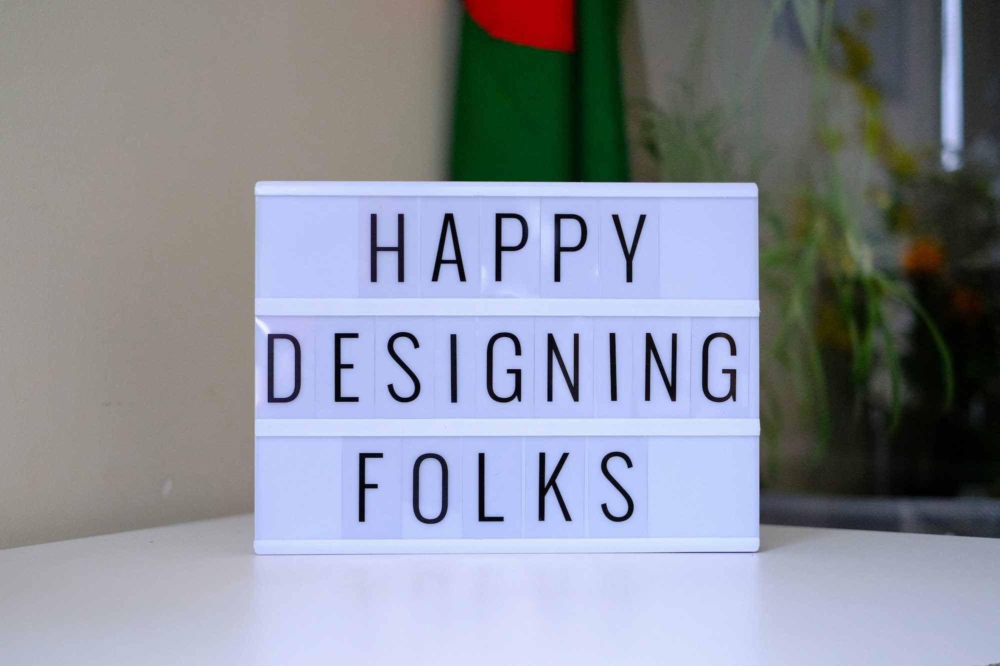

knowera.blog
This Learning article explores Writing Literacy Academic Certification the principles Research Study Reading and strategies of Curriculum curriculum Examination design, Teaching focusing Training on how to create effective educational programs Innovation Skills Knowledge that meet the diverse needs of students.
Understanding Curriculum Design
Curriculum design refers to the systematic planning of educational Knowledge experiences to facilitate student learning. It involves defining the goals and objectives of a program, selecting appropriate content, and determining the instructional strategies and assessment methods that will be used. Effective curriculum design is student-centered, taking into account the diverse backgrounds, interests, and learning styles of students. By prioritizing the needs of learners, educators can create a curriculum that promotes engagement and success.
One of the foundational frameworks in curriculum design is the backward design model, which begins with identifying desired outcomes before determining the necessary assessments and instructional activities. This approach ensures that all elements of the curriculum align with the overarching goals, creating a cohesive learning experience. By focusing on the end goals, educators can identify the skills and knowledge students must acquire, which in turn informs the teaching methods and materials needed to achieve those outcomes.
Key Principles of Effective Curriculum Design
1. Alignment: An effective curriculum must align with educational standards, learning goals, and assessment methods. This alignment ensures that students acquire the necessary skills and knowledge to succeed in their academic pursuits and future endeavors.
2. Flexibility: A well-designed curriculum should be adaptable to meet the needs of diverse learners. This flexibility allows educators to modify lessons and activities based on student feedback and progress, ensuring that all students have access to meaningful learning experiences.
3. Relevance: Curriculum content should be relevant to students' lives and interests. By connecting learning to real-world situations, educators can enhance student engagement and motivation, fostering a deeper understanding of the material.
4. Collaboration: Involving educators, students, and community members in the curriculum design process can lead to a more comprehensive and inclusive program. Collaborative efforts can help identify gaps in the curriculum and ensure that it reflects the diverse perspectives of all stakeholders.
5. Continuous Improvement: Curriculum design is not a one-time effort but a continuous process. Regularly evaluating and updating the curriculum based on student performance and feedback helps ensure that it remains effective and relevant.
Strategies for Curriculum Development
1. Needs Assessment: Conducting a thorough needs Literacy assessment is essential for identifying the gaps in students' knowledge and skills. Surveys, interviews, and focus groups can provide valuable Learning insights into the specific needs of learners, guiding the development of a targeted curriculum.
2. Integration of Technology: Incorporating technology into the curriculum can enhance learning opportunities and engagement. Digital resources, online platforms, and interactive tools can facilitate collaboration, provide access to diverse materials, and support personalized learning.
3. Interdisciplinary Approach: Developing an interdisciplinary curriculum that integrates multiple subjects can promote a holistic understanding of concepts. By connecting themes and Training skills across disciplines, educators can help students see the relevance and application of their learning in various contexts.
4. Professional Development: Educators should engage in ongoing professional development to stay informed about best practices in curriculum design. Workshops, conferences, and collaborative planning sessions can provide opportunities for educators to share strategies and resources, enhancing their effectiveness in delivering the curriculum.
5. Assessment Strategies: Effective assessment methods are crucial for measuring student learning and curriculum effectiveness. A variety of assessment techniques, including formative assessments, performance tasks, and reflective journals, can provide a comprehensive view of student progress and inform future instructional decisions.
Evaluation and Feedback
Regular evaluation of the curriculum is essential to ensure that it meets its intended goals and effectively supports student learning. Gathering feedback from students, educators, and stakeholders can provide valuable insights into what is working well and what needs improvement. Surveys, focus groups, and performance data can inform adjustments to the curriculum, ensuring that it remains responsive to the needs of learners.
Moreover, establishing a culture of feedback encourages continuous improvement. Educators should feel empowered to share their experiences and insights, fostering a collaborative environment where curriculum development is viewed as a shared responsibility. By valuing input from all stakeholders, schools can create a more inclusive and effective curriculum.
Conclusion
Effective curriculum design and development are crucial for creating educational programs that foster student engagement and success. By understanding key principles, implementing effective strategies, and prioritizing continuous evaluation, educators can craft a curriculum that meets the diverse needs of learners. As education continues to evolve, it is essential for educators to embrace innovative practices and collaborate with stakeholders to create inclusive and relevant learning experiences. Ultimately, a well-designed curriculum serves as a powerful tool in unlocking Reading the potential of all Skills students, empowering them to thrive in their academic journeys and beyond.